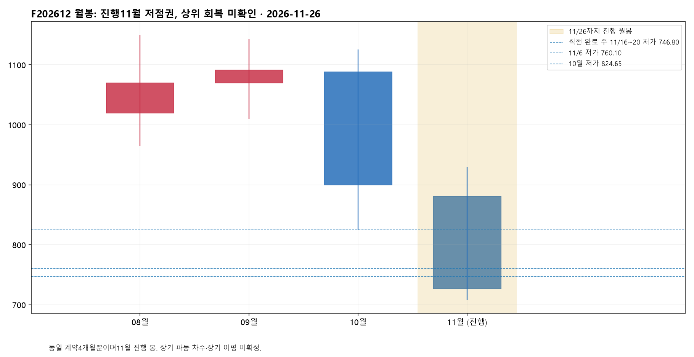
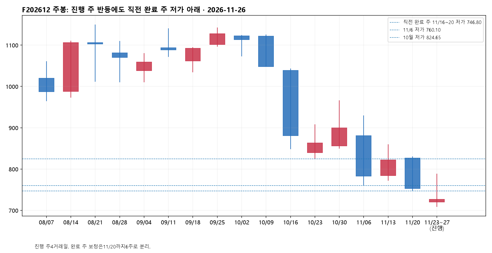
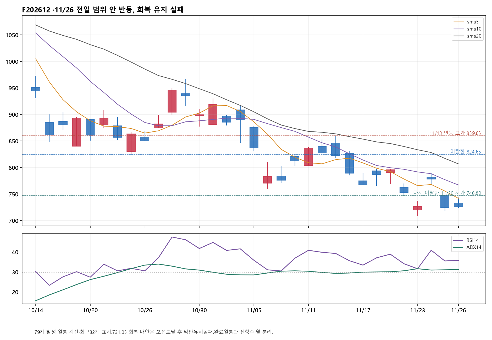
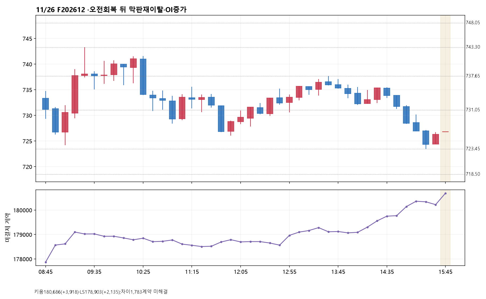
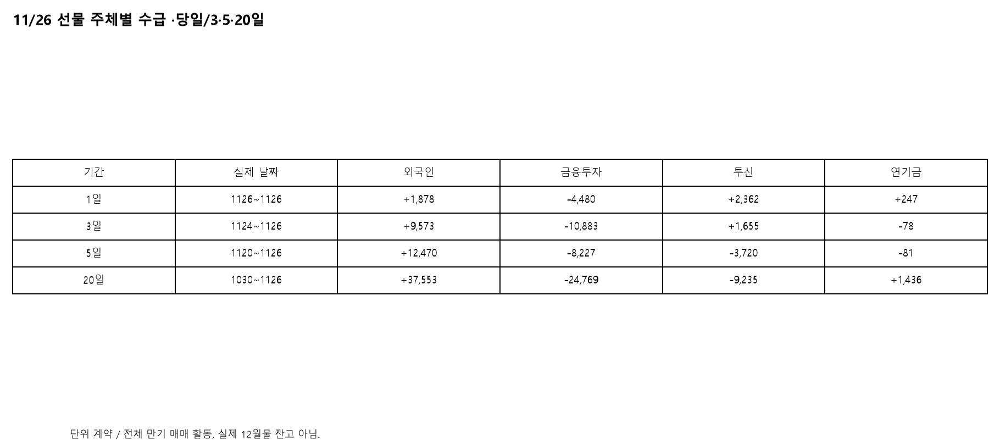
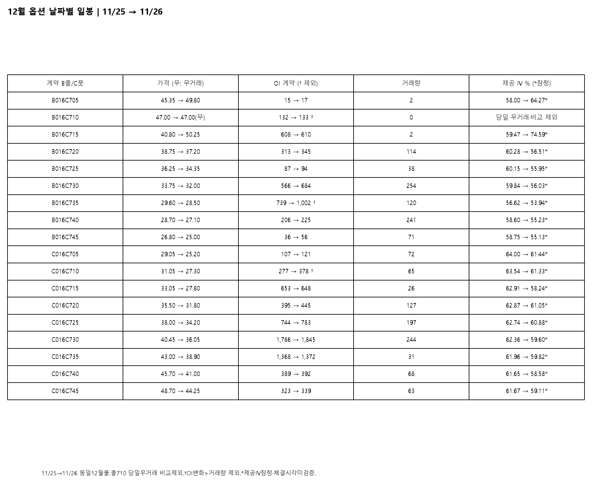

F202612 / A016C000 · 정규장 726.75 · OI 180,686 · 이후 야간 미반영
직전 11/25 판을 먼저 대조합니다. 767.30 방어 회복 가설은 전일 이미 폐기됐고 오늘도 되살리지 않습니다. 721.50 이탈→718.50·708.25 재시험 경로는 오늘 저가 723.45가 위에 있어 아직 미발동입니다. 반대로 731.05 회복 대안은 시가 733.35 이후 첫 08:45 표시봉 종가731.15였으나 08:55 종가726.70으로 첫 안착에 실패했습니다. 09:15 종가737.75, 다음09:25 저가737.40으로 다시 위에서 지지한 뒤 오전 고가743.30까지 올라 737.25~739.65 구간에는 도달했습니다. 다만746.80~748.05는 미도달이며,14:55 종가728.45와15:05 종가726.95로731.05 유지에 실패했습니다. 도달과 이후 실패를 함께 보존합니다. 상위 실제 앵커는11/13 859.65→11/23 708.25→11/24 789.05→11/25 718.50→오늘743.30·723.45입니다. 선호는 상위 하락 중 반등이 다시 눌리는 경로, 대안은708.25 이후 반등의 깊은 조정이 아직 이어지는 경로입니다. 723.45 침범은 오늘 저점 유지 가설의 철회,718.50 침범은 전일 시작점 반등 가설의 철회,708.25 침범은11/23 시작점 가설의 철회로 구분합니다. 743.30 돌파는 오늘 반등 실패의 약화,748.05 위 일봉 마감·재지지는 전일 급락 이후 회복 확인,789.05 실제 돌파는11/24 반등 종료 앵커 가설의 철회 조건입니다. 내부1~5파·3-3-5 분할이 부족해 차수 미확정이며 충격파 하드룰 통과·파동 완성·확률·피보 목표를 선언하지 않습니다.
721.50~722.00→718.50.718.50 실제 침범은 전일 시작점 가설 철회이며708.25를 다음 확인.731.70 위 재안착이면 약세 우선도 낮춤.
735.75~737.65→741.55~743.30.743.30 돌파·재지지면746.80~748.05.731.05 재이탈·재저항이면 회복 가설 약화,723.45 실제 침범이면 오늘 시작점 가설 철회.
11/26 F202612(A016C000) 정규장 종가 726.75, 전일 대비 +2.00(+0.28%)입니다. 전일 제시한 731.05 회복 대안은 오전에 발동해 737.25~739.65를 넘었지만, 743.30에서 막힌 뒤 14:55 표시 10분봉 종가 728.45로 회복선 아래에 복귀했습니다. 따라서 현재는 상위 하락 속 반등 유지 실패를 우선합니다. 723.45~724.15를 지키며 731.05~731.70 위 완료 10분봉과 눌림 재지지가 확인돼야 회복 대안을 다시 활성화합니다. 723.45 아래 완료 10분봉·반등 재저항이면 721.50~722.00, 이어 718.50을 확인합니다. 외국인·투신 선물 동반 매수는 개선이지만 외국인 현물·주식선물 매도와 막판 가격 하락·OI 증가가 충돌합니다.
직전 11/25 판을 먼저 대조합니다. 767.30 방어 회복 가설은 전일 이미 폐기됐고 오늘도 되살리지 않습니다. 721.50 이탈→718.50·708.25 재시험 경로는 오늘 저가 723.45가 위에 있어 아직 미발동입니다. 반대로 731.05 회복 대안은 시가 733.35 이후 첫 08:45 표시봉 종가731.15였으나 08:55 종가726.70으로 첫 안착에 실패했습니다. 09:15 종가737.75, 다음09:25 저가737.40으로 다시 위에서 지지한 뒤 오전 고가743.30까지 올라 737.25~739.65 구간에는 도달했습니다. 다만746.80~748.05는 미도달이며,14:55 종가728.45와15:05 종가726.95로731.05 유지에 실패했습니다. 도달과 이후 실패를 함께 보존합니다. 상위 실제 앵커는11/13 859.65→11/23 708.25→11/24 789.05→11/25 718.50→오늘743.30·723.45입니다. 선호는 상위 하락 중 반등이 다시 눌리는 경로, 대안은708.25 이후 반등의 깊은 조정이 아직 이어지는 경로입니다. 723.45 침범은 오늘 저점 유지 가설의 철회,718.50 침범은 전일 시작점 반등 가설의 철회,708.25 침범은11/23 시작점 가설의 철회로 구분합니다. 743.30 돌파는 오늘 반등 실패의 약화,748.05 위 일봉 마감·재지지는 전일 급락 이후 회복 확인,789.05 실제 돌파는11/24 반등 종료 앵커 가설의 철회 조건입니다. 내부1~5파·3-3-5 분할이 부족해 차수 미확정이며 충격파 하드룰 통과·파동 완성·확률·피보 목표를 선언하지 않습니다.
전체 만기 선물 당일 순매매는 외국인+1,878·기관-1,734·금융투자-4,480·투신+2,362·연기금+247·개인-118계약입니다. 금융투자 제외 기관은+2,746계약(기관−금투)이며 기관과 하위를 중복 합산하지 않습니다. 전일 투신-6,864에서 매수로 돌아와 외국인·투신 동행은 회복됐지만 금융투자는 전일+2,430에서 매도로 전환했습니다. 외국인 최근3·5·20일은+9,573/+12,470/+37,553계약, 투신은+1,655/-3,720/-9,235, 금융투자는-10,883/-8,227/-24,769입니다. 당일 개선과 누적 매도, 주체별 충돌을 함께 봅니다. 순매매는 실제 보유량이나 특정 계좌의 신규·청산 구분이 아닙니다.
현물 KOSPI 당일 외국인-1,127·금융투자+6,252·투신+938·연기금-220(LS 원천 금액 단위, 원화 환산 미검증)입니다. 외국인 현물3·5·20일도-11,273/-24,794/-174,645로 순매도입니다. 외국인 지수선물은+1,878계약이지만 주식선물은-182,753계약이어서 같은 계좌의 일방향 상승 노출로 합치지 않습니다. 프로그램 총+166,987·차익-15,175·비차익+182,161(원천 단위)로 전일 비차익 매도에서 당일 유입으로 바뀌었지만3·5·20일 비차익은-574,395/-1,523,775/-7,493,705로 누적 유출입니다. 총합과 구성합에1단위 차이는 원본 그대로 둡니다. LS 마감 후 스냅샷 시장 베이시스-0.33·이론+0.97·차이-1.30은 전일+0.94/+1.00/-0.06보다 약해졌습니다. 현물15:30·선물15:45 비동시 종가와 제공사 모형 비교이며 동시 차익 기회로 확정하지 않습니다. 같은 EOD의 KOSPI200 200종목에서 외국인은 삼성전자-97,099·SK하이닉스+314,092, 두 종목 합+216,993이지만 나머지198개는-384,004, 순매수55·순매도142개입니다. 투신은 나머지+72,969, 순매수122·순매도75개이고 금융투자는 나머지+341,350, 순매수160·순매도37개입니다. 저장 원천 단위이며 KOSPI 전체와 혼합하지 않습니다. 외국인 매수는 대형주 중에서도 갈리고 나머지 종목 확산은 약해, 기관 방어와 외국인 확산을 구분합니다. 지수 기여도 비중과 KOSDAQ 전체 폭은 미확보입니다.
원천 표시시각 기준08:45→09:55 가격731.15→740.05(+8.90), OI177,869→178,927(+1,058)로 오전에는 상승·참여 확대가 함께 나타났습니다. 09:55→11:55는 가격-11.25·OI-141,11:55→14:35는 가격+5.05·OI+963으로 다시 달랐습니다. 막판14:35→15:25에는733.85→726.30(-7.55), OI179,749→180,221(+472)로 회복 실패와 OI 증가가 겹쳤습니다. 마지막15:45 단일가까지 가격+0.45·OI+465입니다. 하루 종가는 전일보다 올랐지만 장중은 오전 상승→되밀림→오후 반등→막판 하락의 순서입니다. 일별 상승·OI 증가만으로 하루 전체를 신규 롱으로 분류하지 않습니다. 투자자별 동시각 관측은 없어 막판 매도 주체·신규 숏 규모·동일 주체 청산은 판단 불가입니다. LS CVD는 당일 FC9 날짜 앵커와 마감 검증으로 최종값+142계약(분류 매수59,684−매도59,542)이 확인됐습니다. 잔여3,207계약은 배분하지 않으며61개 거래량 간격 때문에 장중 CVD 경로·고저·OHLC는 제외합니다. 작은 양의 종점은 막판 가격 약화를 뒤집는 근거가 아닙니다.
키움 당일 OI180,686은 같은 현재 조회판의 전일176,768 대비+3,918입니다. 전일 보존 원본176,419와 비교하면+4,267이며 과거판의+349 정정 원인은 미해결입니다. LS 당일 일봉과 보존 마감 시세는178,903, 전일176,768 대비+2,135로 현재 키움과1,783계약 차이가 남습니다. 양쪽 원천과 조회판을 보존하며 하나를 최종값으로 골라 섞지 않습니다. 차월 F202703 종가718.05·거래량118·OI9,610, 전일9,046 대비+564입니다. OI 증감이 당일 거래량보다 커 집계 충돌을 기록하고 차월 방향·롤오버 규모에서 제외합니다. 두 만기를 연결 보유량으로 합산하지 않습니다.
12월물 콜·풋705~745의18계약을 날짜 지정 LS 일봉과 EOD 체인의 코드·행사가·가격·거래량·OI로 대조했습니다. 부분 체인 OI 커버리지는31.70%이고 실제 체결시각은 미검증입니다. 콜725는36.25→34.35·OI+7·거래량38, 풋725는38.00→34.20·OI+39·거래량197입니다. 양쪽 프리미엄 하락만으로 방향을 확정하지 않습니다. 콜735는OI+263 대 거래량120, 콜710은OI+1 대 거래량0, 풋710은OI+101 대 거래량65로 OI 증감 해석에서 제외합니다. 콜710은 당일 무거래여서 체결가격·IV 변화 비교도 제외합니다. 제공 IV는 두 마감 후 보존 스냅샷의 잠정 비교이며 동시 확정 IV·검증된 스큐가 아닙니다. 외국인 전체 만기 콜-1,002계약/-6억원, 풋-246계약/+28억원은 계약수와 금액 방향도 다릅니다. 만기별 개시/청산·딜러 보유가 없어 실제 감마·감마플립·최대고통·잔존 수량·평단은 판단 불가입니다.
분석 기준일11/26은 목요일 위클리 옵션 만기일이고 해당 상품 정규장 최종거래는15:20, 계속 거래되는12월물 선물은15:45로 구분합니다. 월간11월물 옵션은11/12에 종료됐고 F202612·12월 월간 옵션 만기는12/10입니다. KRX 공식 휴장일 달력과 월간 두 번째 목요일·위클리 두 번째 목요일 제외 규칙을 대조했으며11/26 이후12/10까지 남은 정규 거래일은10일입니다. KRX 상품 웹 본문은403으로 직접 재열람하지 못해 공식 증권사 계약명세를 함께 확인합니다. 당일 위클리 완전 체인과15:20 전후 주체별 수급·보유자료가 없어 막판 하락을 만기 청산·헤지 조정으로 확정하지 않습니다. 다음 실제 거래일11/27에 오늘723.45 저점·731.05 회복선의 유지, 현물 외국인 순매수 복귀·비차익 유입 지속, 해당 선물 OI·옵션 변화를 다시 확인해야 합니다.
10/12~11/20의6개 완료 주로만 해석 배율을 산출했고11/23~26 진행 주는 보정에서 제외했습니다. 현물 외국인1.157·금투0.954·투신1.182·연기금0.988·개인0.811, 선물 외국인0.924·금투0.891·투신1.157·연기금1.013·개인0.930입니다. 다음 날 예측 배율은 모두1.000이며 해석 배율은 인과 영향력·시장 비중·미래 확률이 아닙니다. 현물 외국인·투신 동반 매수·당일 상승 뒤 다음 날 상승은3/8(37.5%; 일반 상승일 기준4/13=30.8%), 동반 매도·당일 하락 뒤 다음 날 하락은7/16(43.8%; 일반 하락일10/20=50.0%)입니다. 전일11/25 현물 매도·하락 신호는 오늘 소폭 상승으로 지속 실패에 추가됐습니다. 선물 동반 매수·당일 상승 뒤 다음 날 상승은1/4(25.0%)이고 오늘 신호의 다음 날은 미확인으로 분모에서 제외했습니다. 소표본·사후 선택·시계열 의존성 때문에 미래 적중확률로 쓰지 않으며 옵션 주체 가중치는 자료 부족입니다.
F202612 활성 일봉2026/08/03~11/26의79개와 같은 계약10분봉을 사용했습니다. 월봉8~11월4개와 주봉은 동일 일봉 재표본화이며11월·11/23 시작 주는 진행 봉입니다. 오늘 일봉은 완료,08:45~15:45 표시42봉에서 마지막 단일가와15:25 이후20분 간격을 별도로 봅니다. 최근3일11/24~26,5일11/20·23·24·25·26,20일10/30~11/26을 구분했습니다. 9월 만기 뒤9/11~11/26의51거래일 전체 만기 관찰 합계는 외국인+42,749·기관-40,753·금투-27,491·투신-10,243·연기금+1,356계약입니다. 실제12월물 잔고가 아닙니다. 현물 t1617/t1664 차이75개와 전일 현물4필드 재조회 정정을 보존하고 현재 동일 조회판으로만 누적했습니다. LS 당일 CVD 종점은 확보됐지만 과거 CVD 결측으로3·5·20일 누적 CVD는 계산하지 않습니다. LS 보조 가격창은11/25 종료이므로 오늘 누적창으로 바꾸지 않았습니다.
당일 보조 현물 KOSPI4711.21(+0.29%)·KOSPI200727.08을 확인했습니다. KOSPI와 F202612의10/12~11/26 OHLC272개 셀은 키움·LS 대조를 통과했습니다. 국내 다중 시간대·방향 연구·14단계 환경 원천은11/25, 해외 본문11/12·검증11/25 PARTIAL이어서 오늘 근거에서 제외합니다. 나스닥·SOX·다우·니케이의 오늘 완료 세션별 월/주/일/10분 비교는 자료 부족입니다. 과거 ADX 탐색 F202609 26/36와 독립 KOSPI200 30/66 실패는 연구 경계이며 현재 예측력으로 쓰지 않았습니다. 국내 현물 보조 누락과 검증된 선물 본자료는 구분합니다.

완료10월 O1088.35/H1125.55/L824.65/C899.45 뒤 진행11월 O880.80/H930.00/L708.25/C726.75입니다.

완료11/16~20 주 O826.50/H830.80/L746.80/C752.75. 진행11/23~26 O719.90/H789.05/L708.25/C726.75입니다.

직전 11/25 판을 먼저 대조합니다. 767.30 방어 회복 가설은 전일 이미 폐기됐고 오늘도 되살리지 않습니다. 721.50 이탈→718.50·708.25 재시험 경로는 오늘 저가 723.45가 위에 있어 아직 미발동입니다. 반대로 731.05 회복 대안은 시가 733.35 이후 첫 08:45 표시봉 종가731.15였으나 08:55 종가726.70으로 첫 안착에 실패했습니다. 09:15 종가737.75, 다음09:25 저가737.40으로 다시 위에서 지지한 뒤 오전 고가743.30까지 올라 737.25~739.65 구간에는 도달했습니다. 다만746.80~748.05는 미도달이며,14:55 종가728.45와15:05 종가726.95로731.05 유지에 실패했습니다. 도달과 이후 실패를 함께 보존합니다. 상위 실제 앵커는11/13 859.65→11/23 708.25→11/24 789.05→11/25 718.50→오늘743.30·723.45입니다. 선호는 상위 하락 중 반등이 다시 눌리는 경로, 대안은708.25 이후 반등의 깊은 조정이 아직 이어지는 경로입니다. 723.45 침범은 오늘 저점 유지 가설의 철회,718.50 침범은 전일 시작점 반등 가설의 철회,708.25 침범은11/23 시작점 가설의 철회로 구분합니다. 743.30 돌파는 오늘 반등 실패의 약화,748.05 위 일봉 마감·재지지는 전일 급락 이후 회복 확인,789.05 실제 돌파는11/24 반등 종료 앵커 가설의 철회 조건입니다. 내부1~5파·3-3-5 분할이 부족해 차수 미확정이며 충격파 하드룰 통과·파동 완성·확률·피보 목표를 선언하지 않습니다.

원천 표시시각 기준08:45→09:55 가격731.15→740.05(+8.90), OI177,869→178,927(+1,058)로 오전에는 상승·참여 확대가 함께 나타났습니다. 09:55→11:55는 가격-11.25·OI-141,11:55→14:35는 가격+5.05·OI+963으로 다시 달랐습니다. 막판14:35→15:25에는733.85→726.30(-7.55), OI179,749→180,221(+472)로 회복 실패와 OI 증가가 겹쳤습니다. 마지막15:45 단일가까지 가격+0.45·OI+465입니다. 하루 종가는 전일보다 올랐지만 장중은 오전 상승→되밀림→오후 반등→막판 하락의 순서입니다. 일별 상승·OI 증가만으로 하루 전체를 신규 롱으로 분류하지 않습니다. 투자자별 동시각 관측은 없어 막판 매도 주체·신규 숏 규모·동일 주체 청산은 판단 불가입니다. LS CVD는 당일 FC9 날짜 앵커와 마감 검증으로 최종값+142계약(분류 매수59,684−매도59,542)이 확인됐습니다. 잔여3,207계약은 배분하지 않으며61개 거래량 간격 때문에 장중 CVD 경로·고저·OHLC는 제외합니다. 작은 양의 종점은 막판 가격 약화를 뒤집는 근거가 아닙니다.

전체 만기 선물 당일 순매매는 외국인+1,878·기관-1,734·금융투자-4,480·투신+2,362·연기금+247·개인-118계약입니다. 금융투자 제외 기관은+2,746계약(기관−금투)이며 기관과 하위를 중복 합산하지 않습니다. 전일 투신-6,864에서 매수로 돌아와 외국인·투신 동행은 회복됐지만 금융투자는 전일+2,430에서 매도로 전환했습니다. 외국인 최근3·5·20일은+9,573/+12,470/+37,553계약, 투신은+1,655/-3,720/-9,235, 금융투자는-10,883/-8,227/-24,769입니다. 당일 개선과 누적 매도, 주체별 충돌을 함께 봅니다. 순매매는 실제 보유량이나 특정 계좌의 신규·청산 구분이 아닙니다.

10/12~11/20의6개 완료 주로만 해석 배율을 산출했고11/23~26 진행 주는 보정에서 제외했습니다. 현물 외국인1.157·금투0.954·투신1.182·연기금0.988·개인0.811, 선물 외국인0.924·금투0.891·투신1.157·연기금1.013·개인0.930입니다. 다음 날 예측 배율은 모두1.000이며 해석 배율은 인과 영향력·시장 비중·미래 확률이 아닙니다. 현물 외국인·투신 동반 매수·당일 상승 뒤 다음 날 상승은3/8(37.5%; 일반 상승일 기준4/13=30.8%), 동반 매도·당일 하락 뒤 다음 날 하락은7/16(43.8%; 일반 하락일10/20=50.0%)입니다. 전일11/25 현물 매도·하락 신호는 오늘 소폭 상승으로 지속 실패에 추가됐습니다. 선물 동반 매수·당일 상승 뒤 다음 날 상승은1/4(25.0%)이고 오늘 신호의 다음 날은 미확인으로 분모에서 제외했습니다. 소표본·사후 선택·시계열 의존성 때문에 미래 적중확률로 쓰지 않으며 옵션 주체 가중치는 자료 부족입니다.

12월물 콜·풋705~745의18계약을 날짜 지정 LS 일봉과 EOD 체인의 코드·행사가·가격·거래량·OI로 대조했습니다. 부분 체인 OI 커버리지는31.70%이고 실제 체결시각은 미검증입니다. 콜725는36.25→34.35·OI+7·거래량38, 풋725는38.00→34.20·OI+39·거래량197입니다. 양쪽 프리미엄 하락만으로 방향을 확정하지 않습니다. 콜735는OI+263 대 거래량120, 콜710은OI+1 대 거래량0, 풋710은OI+101 대 거래량65로 OI 증감 해석에서 제외합니다. 콜710은 당일 무거래여서 체결가격·IV 변화 비교도 제외합니다. 제공 IV는 두 마감 후 보존 스냅샷의 잠정 비교이며 동시 확정 IV·검증된 스큐가 아닙니다. 외국인 전체 만기 콜-1,002계약/-6억원, 풋-246계약/+28억원은 계약수와 금액 방향도 다릅니다. 만기별 개시/청산·딜러 보유가 없어 실제 감마·감마플립·최대고통·잔존 수량·평단은 판단 불가입니다.
2026-11-26T17:07:32.515574+09:00 · 조건부 해설, 자동 주문·비중 변경 아님